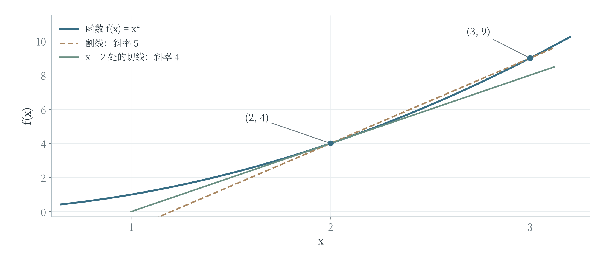
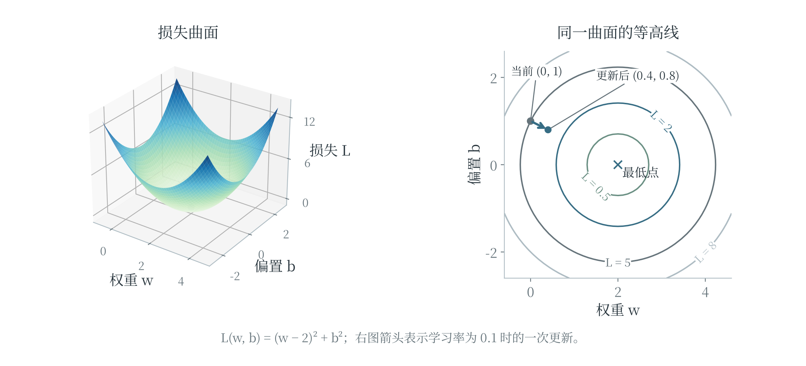
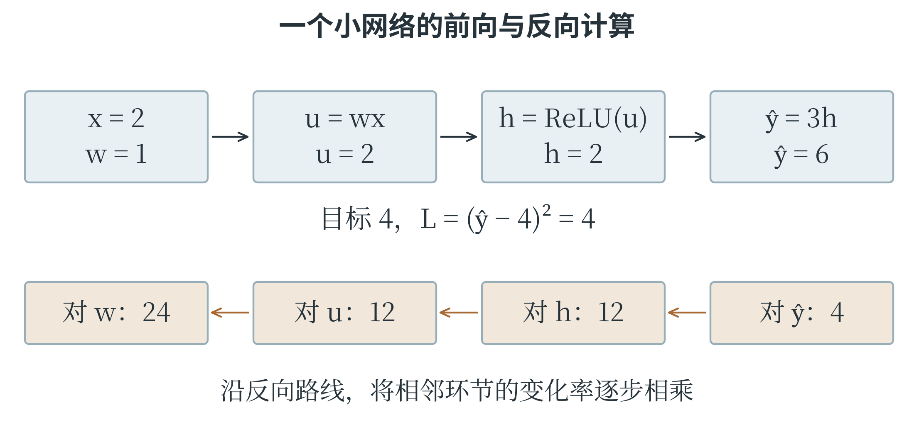

6.6 极限、导数与梯度下降
从一段变化到一点附近的变化
一次函数 \(y=2x+1\) 的输入增加 1，输出就增加 2，变化率始终相同。二次函数 \(f(x)=x^2\) 则不同：从 1 到 2，平均变化率为 \((4-1)/(2-1)=3\)；从 2 到 3，平均变化率为 5。所谓平均变化率，就是一段范围内输出改变量除以输入改变量，在图像上对应两点连线的斜率。
若希望知道 \(x=2\) 附近变化得有多快，可以把另一个点逐渐靠近它。设输入从 2 变为 \(2+h\)，其中 \(h\ne0\)，平均变化率为：
\(h\) 取 1、0.1、0.01 时，结果分别为 5、4.1、4.01；取 \(-0.1\)、\(-0.01\) 时，结果为 3.9、3.99。无论从哪一侧靠近，\(h\) 越接近零，\(4+h\) 就越接近 4。描述这种“无限靠近时趋向哪里”的概念，称为极限。这里先保持 \(h\) 非零完成计算，再研究它趋近零时的结果，并不是直接把分母设为零。如果一个函数在某点的这种平均变化率趋向一个确定的数，就称这个数为函数在该点的导数，表示该点的瞬时变化率。\(f(x)\) 的导数常记为 \(f'(x)\)，也可记为 \(\mathrm{d}f/\mathrm{d}x\)。上面的计算得到 \(f'(2)=4\)。图 6-11 中，两个点越来越近时，割线的方向逐渐接近切线方向，导数就是这条切线的斜率。

导数为正，表示函数在该点附近沿输入增大的方向具有上升趋势；导数为负，则具有下降趋势。导数的绝对值越大，局部变化越陡。
导数为零表示该点切线水平，但不能单凭这一点断定它是最小值。例如，\(x^2\) 在零处取得最小值，\(-x^2\) 在零处取得最大值，两者在零处的导数都是零。有些函数在某点没有导数：ReLU 在零点两侧的斜率分别为 0 和 1，不能得到同一个值。
几条常用求导规则
将上面的推导中的 2 换成一般的 \(x\)，可以得到 \((x^2)'=2x\)。多项式各项也有简便规则：常数的导数为零，\(x\) 的导数为 1，\(x^n\) 的导数为 \(nx^{n-1}\)，这里 \(n\) 为正整数。常数倍可以保留，各项相加减则分别求导后再相加减。因此：
导数本身也是一个函数。想知道第一个多项式在 \(x=2\) 处怎样变化，代入导函数得到 \(6\times2-5=7\) 即可。\(e^x\) 有一个特别的性质：它的导数仍是 \(e^x\)。若指数内部还有一个随 \(x\) 变化的表达式，还要乘上内部表达式的导数，这体现了链式法则。例如，\((e^{3x})'=3e^{3x}\)，\((e^{-x})'=-e^{-x}\)，而不是都原样照抄。再看一个“函数套函数”的例子。对 \((2x+1)^2\)，可以先把 \(2x+1\) 看成整体，外层平方的变化率是 \(2(2x+1)\)；内层随 \(x\) 变化的速率是 2，两者相乘，得到 \(4(2x+1)\)。展开为 \(4x^2+4x+1\) 后再求导，也得到 \(8x+4\)。神经网络把多层函数接在一起，反向传播正是沿这些连接应用链式法则，把输出损失对前面各量的影响逐步传回去。
求导也能回过头检验第 6.4 节的最大似然例子。将 \(L(p)=p^3(1-p)\) 展开为 \(p^3-p^4\)，导数为 \(3p^2-4p^3=p^2(3-4p)\)。在 \(0<p<3/4\) 时为正，在 \(3/4<p<1\) 时为负，说明似然先上升再下降，因此在 \(p=3/4\) 处最大。前面通过数据比例得到的估计，便有了变化率方面的解释。
沿着减小损失的方向移动
梯度下降利用当前的变化率，向函数值减小的方向调整参数。先看只有一个参数的损失函数 \(L(w)=(w-2)^2\)。它在 \(w=2\) 处最小，导数为 \(L'(w)=2(w-2)\)。当 \(w=0\) 时，导数为 \(-4\)，说明向增大 \(w\) 的方向移动，附近的损失会下降；当 \(w=3\) 时，导数为 2，减小 \(w\) 则有助于下降。
把每次移动的比例记为 \(\eta\)，读作 eta，称为学习率。一次更新可写为：
这里的减号保证沿导数所指上升方向的反方向移动。若初值为零，学习率为 0.1，第一次更新为 \(0-0.1\times(-4)=0.4\)，损失从 4 降到 2.56；第二次导数为 \(2(0.4-2)=-3.2\)，更新到 0.72，损失降到 1.6384。每次都要在新的位置重新计算导数，不能始终沿用第一次的 \(-4\)。
w = 0.0
learning_rate = 0.1
for step in range(3):
gradient = 2 * (w - 2)
w = w - learning_rate * gradient
loss = (w - 2) ** 2
print(round(w, 4), round(loss, 4))
三行结果依次为 0.4 2.56、0.72 1.6384、0.976 1.0486。损失持续下降，但前三步没有立即到达最小点。学习率太小，靠近得慢；太大则可能跨过谷底来回摆动，甚至越走越远。对这个特定的二次函数，若学习率取 1.1，从零出发先到 4.4，再到 \(-0.88\)，距离最优点反而扩大。这与第四章中调节过猛的反馈现象有相通之处。
小步变化怎样检验导数
导数计算可以用很小的有限变化作数值核对。设 \(f(x)=(2x+1)^2\)，在 \(x=1\) 处的导数为 \(4(2\times1+1)=12\)。这表示输入在 1 附近增加一小段 h 时，输出改变量近似为 \(12h\)。取 \(h=0.01\)，预测的改变量为 0.12；直接代入公式，实际改变量为 \(3.02^2-3^2=0.1204\)，两者已经很接近。差出的 0.0004 从哪里来？把式子展开，实际改变量为 \(12h+4h^2\)。导数提供其中与 h 成正比的部分，\(4h^2\) 则是有限步长下仍存在的差异。当 h 更小时，这一部分相对于 h 也变得更小。
导数描述的是局部变化。把这一步跨得很大，近似就可能不再准确。
程序中可以用相邻两点的差商检查导数公式：
def function_value(x):
return (2 * x + 1) ** 2
x = 1.0
for h in [0.1, 0.01, 0.001]:
rate = (function_value(x + h) - function_value(x)) / h
print(round(rate, 3))
# 12.4
# 12.04
# 12.004
这三个数逐步接近 12，与公式求得的导数一致。用有限步长近似导数，称为数值求导的一种方法。它适合帮助理解或核对，但通常不能代替解析求导或反向传播：步长较大时近似较粗，过小时又可能受到浮点舍入的影响；参数很多时，逐个试探还需要大量计算。梯度检查的想法也从这里来。把某一个参数稍稍增加、稍稍减少，观察损失如何变化，再与反向传播给出的偏导比较，可以帮助发现符号或链式法则用错的位置。检查时要固定其他参数，并保证两次计算采用同一批数据，才能把差异归因于正在考察的参数。
多个参数形成损失曲面
模型通常不止一个参数。对 \(\hat{y}=wx+b\)，设训练样本只有两条：输入为 \(-1\) 时目标为 \(-2\)，输入为 1 时目标为 2。它们的均方误差为：
这次横向的两个坐标分别表示权重 \(w\) 和偏置 \(b\)，竖向表示损失 \(L\)。每一对参数确定一个模型，也确定曲面上的一个点。图 6-12 的曲面呈碗形，最低处为 \((w,b)=(2,0)\)。它与“输入 x 对应预测 y”的函数图像不同：这里固定了训练数据，观察的是更换模型参数会怎样改变整体误差。

只改变 \(w\)、暂时固定 \(b\)，计算损失的变化率，称为损失对 \(w\) 的偏导数；同理可以对 \(b\) 求偏导。本例得到 \(\partial L/\partial w=2(w-2)\)、\(\partial L/\partial b=2b\)。把各参数的偏导按顺序组成向量，就得到梯度，记为 \(\nabla L\)。在 \((0,1)\) 处，梯度为 \((-4,2)\)，负梯度为 \((4,-2)\)；学习率取 0.1，一次更新便到 \((0.4,0.8)\)。等高线连接损失相同的参数位置。在曲面光滑、梯度不为零的位置，梯度垂直于该点经过的等高线，指向局部上升最快的方向；负梯度方向局部下降最快。读图时要先看各圈标出的损失高低，再判断箭头方向，不能把“向中心走”当成所有图都适用的规则。
局部下降最快，不保证一直沿此方向就能到达最低处；步长过大，也可能让损失反而上升。
复杂神经网络的损失曲面可能有许多谷地和平坦区域。某些位置各偏导都为零，却不是最低点。用一个简单的曲面函数 \(F(u,v)=u^2-v^2\) 说明：在原点，梯度为零，沿 \(u\) 轴离开原点时函数值上升，沿 \(v\) 轴离开时却下降，这样的位置称为鞍点。这说明“梯度接近零”需要结合曲面和训练表现解释。梯度下降是一种有用的优化方法，实际效果仍取决于损失形状、初始化、步长以及数据。
把样本、梯度和更新连成一次训练
前面的损失曲面具有很整齐的形式。实际程序常常逐条读取样本，再累加梯度。对线性模型 \(\hat y=wx+b\)，一条样本的误差为 \(e=wx+b-y\)，平方损失是 \(e^2\)。改变 w 会先改变预测，再改变误差和平方，因此由链式法则得到：
其中 x 来自“预测对权重的变化率”，偏置前的对应变化率则为 1。对于一批 n 条样本，逐条计算这些量后取平均，就得到均方误差的两个偏导：
取训练样本 \((1,2)\)、\((2,4)\)，初始 \(w=0\)、\(b=0\)。两条预测都是零，误差分别为 \(-2\)、\(-4\)，MSE 为 10。权重梯度为 \((-2)\times1+(-4)\times2=-10\)，偏置梯度为 \(-2-4=-6\)；这里 \(2/n=1\)，所以不再另乘系数。学习率取 0.1，两个参数一起更新为：
重新预测，得到 1.6 和 2.6，MSE 降为 \((0.4^2+1.4^2)/2=1.06\)。第二次必须从新的参数重新计算，得到权重梯度 \(-3.2\)、偏置梯度 \(-1.8\)，再更新到 \(w=1.32\)、\(b=0.78\)，MSE 为 0.1732。每一步都把同一批输入、目标与当前参数联系起来，不能只看一个“让权重变大”的固定口诀。
samples = [(1.0, 2.0), (2.0, 4.0)]
w, b = 0.0, 0.0
rate = 0.1
for step in range(3):
grad_w, grad_b = 0.0, 0.0
for x, y in samples:
error = w * x + b - y
grad_w += 2 * error * x / len(samples)
grad_b += 2 * error / len(samples)
w -= rate * grad_w
b -= rate * grad_b
loss = sum((w * x + b - y) ** 2
for x, y in samples) / len(samples)
print(round(w, 4), round(b, 4), round(loss, 6))
# 1.0 0.6 1.06
# 1.32 0.78 0.1732
# 1.426 0.828 0.083458
程序先完整累加两个梯度，再更新参数。这保证两个梯度都在同一组旧参数处计算。如果算出第一条样本的贡献后立即修改 w，后面的样本就使用了不同参数，已不再是这里说明的整批梯度。它可能对应另一种更新方式，但必须重新解释过程，不能把两种算法混在一起比较。
沿着连接反向计算变化率
反向传播可以从一条很短的网络看起。设输入 x 为 2，第一层计算 \(u=wx\)、\(h=\max(0,u)\)，第二层计算 \(\hat y=vh\)；本例为简化计算省略偏置。取 \(w=1\)、\(v=3\)，目标 y 为 4。前向计算依次得到 u 为 2、h 为 2、预测为 6，平方损失为 4。反向计算从损失对预测的变化率开始：\((\hat y-y)^2\) 对 \(\hat y\) 的导数是 \(2(\hat y-y)\)，当前为 4。输出层的权重 v 每改变一点，预测按 h 的倍数变化，所以损失对 v 的梯度为 \(4\times h=8\)。再向前传，预测对 h 的变化率为 v，损失对 h 的变化率便为 \(4\times3=12\)。
由于当前 u 大于零，ReLU 在此处的导数为 1；u 对 w 的变化率为 x，也就是 2。因此，损失对第一层权重 w 的梯度为：

学习率取 0.01，同时更新 w、v，得到 \(w=0.76\)、\(v=2.92\)。再次前向计算，预测为 \(2.92\times(0.76\times2)=4.4384\)，损失约为 0.1922，较原来的 4 明显减小。两条梯度大小不同，是因为各条路径上的变化率不同，不是因为训练程序随意给前一层“更大的责任”。
若当前 u 小于零，ReLU 在这一侧输出恒为零，局部导数为零，这条路径向前传递的梯度也会相应变为零。u 恰好为零时，数学导数不存在，软件会采用约定值处理。更宽的网络中，一个中间量可能通向多个输出分支，此时需要把各条路径带来的梯度贡献相加。反向传播计算这些贡献，优化器再使用它们调整参数。